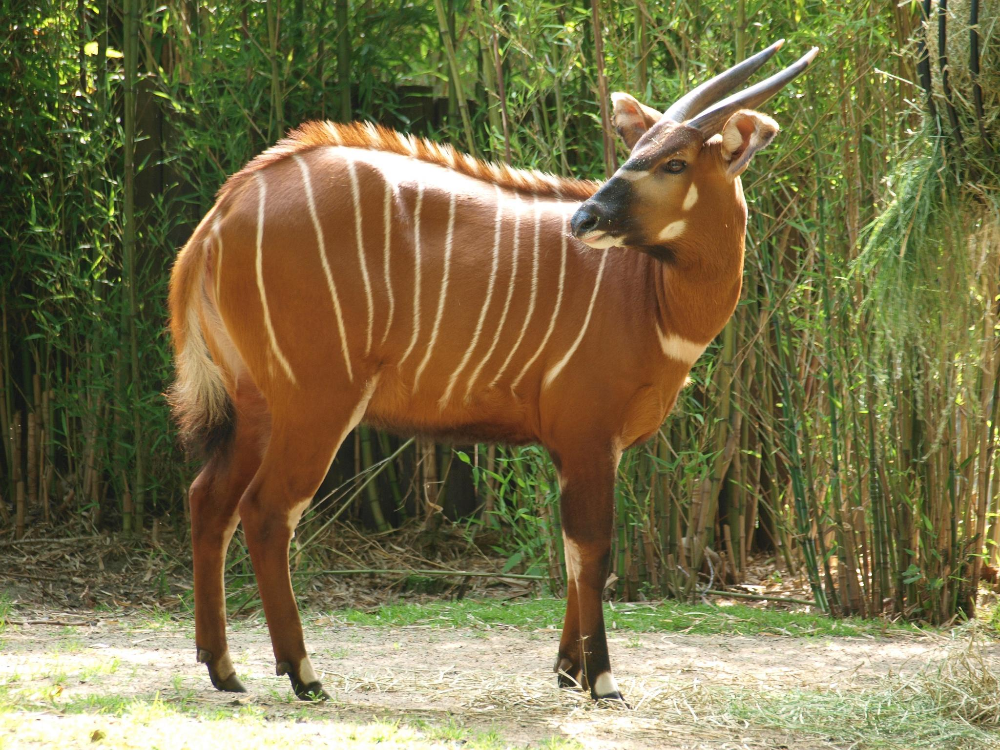
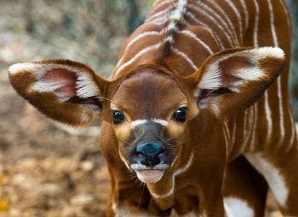
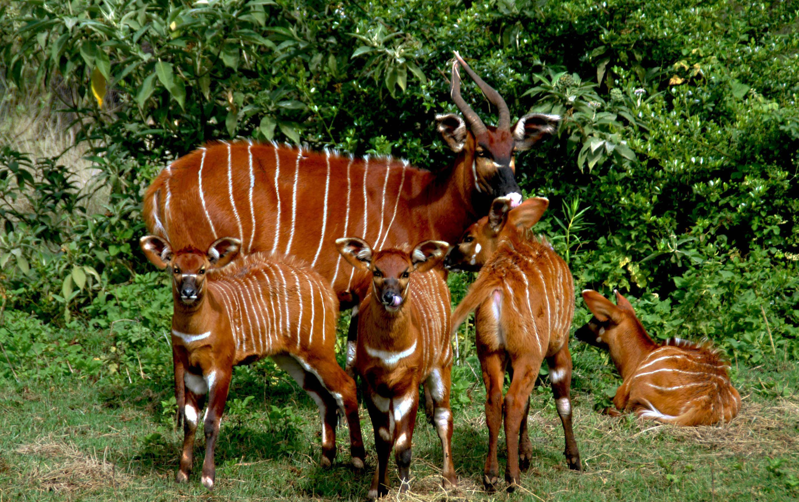
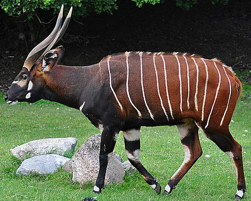
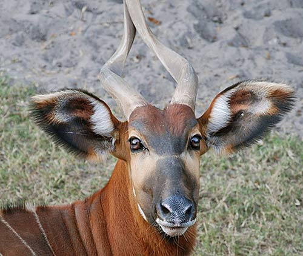
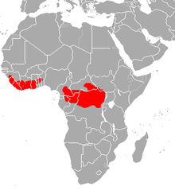

What is a Bongo?
The Bongo is a larger species of antelope. They have light brown fur with white stripes and curling horns. They weigh from 500 to 900 pounds and have a lifespan of up to 19 years in captivity. They live in the dense tropics of Africa and are herbivores. Males usually live on their own, but females are found in herds for safety. Their main predators are lions and leopards.
Fun Facts:
- They are nocturnal animals
- They usually keep away from humans.
- They crave salt and fill their diet with foods high in it
- When it is hot, they roll in mud to cool off.
- There is a legend that, if you touch a Bongo, it will cause you to have uncontrollable spasms.
- They are hunted for meat and are seen as big-game prises
- After having a baby in the forest, a mother will leave her child for a week, only coming back to feed it. The two then go and join a pack of other females to be safer.
   

Conservation
There are many threats to Bongos. They are hunted and suffer form deforestation in their natural habitats. Also, they are not very protected from disease and one disease can kill an entire herd. The population has declined 20% in the last three generations. In Kenya, it is feared that there are only about 75 left in the wild.
To help save these beautiful creatures, farmers should set aside land for them and protect their habitats. Also, hunters should be restricted from hunting them.